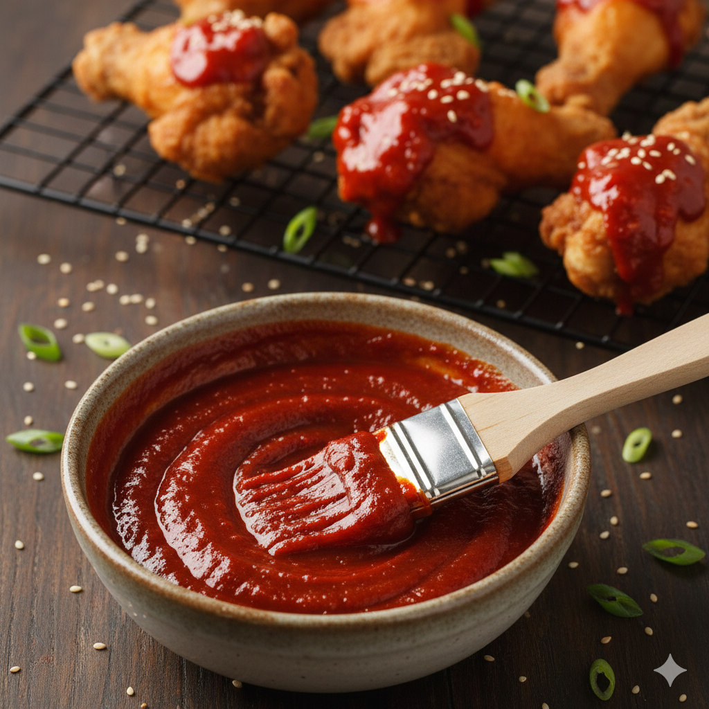

Gochujang Sauce
Home

Gochujang sauce
Recipe for Gochujang sauce. A sweet and spicy sauce that has a strong umami flavour to it, perfect for Korean Fried Chicken or other fried pieces of meat!
Ingredients
- Gochujang paste - 1 tablespoon
- Honey - 1 tablespoon
- Sesame seed oil - 1 tablespoon
- Water - 3 tablespoon
Instructions
- In a mixing bowl, add the Gochujang paste, honey and seasame seed oil and mix together.
- Once evenly mixed, add the water to thin out the consistancy.
- When ready, this sauce can be used as a dip or used to coat korean fried chicken. Enjoy!